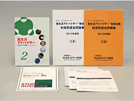
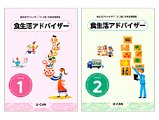
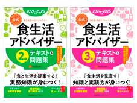

通信講座
協会公認通信教育
一般社団法人FLAネットワーク®協会公認通信講座
食生活アドバイザー® 3級/2級/3・2級コース
■受講期間 各2 ヶ月
■受講料（税込） 3級：13,750円 2級：14,300円 3・2級：16,500円
学校法人産業能率大学は、一般社団法人FLA ネットワーク®協会と提携し、
食生活アドバイザー® 検定試験に的を絞った通信講座。

食生活アドバイザー® 検定試験に的を絞った通信講座。
本コースのねらい
- 食生活アドバイザー® 検定試験に的を絞った学習で、短期間での合格をめざします。
- 栄養と健康、食文化と食習慣、食品学や食品表示、衛生管理、食マーケットなど、食生活に関わる全般的な知識を体系的に身につけ、業務への応用を図ります。
- 幅広い見識を身につけ、食生活を総合的に見直し、的確な指導・アドバイスを行う視点を養います。
- 注意
- 通信講座はFLA ネットワーク®協会の主催ではありません。
ご質問、ご不明点などございましたら、産業能率大学へ直接お問い合わせください。
- 通信講座のお申込み、お問い合わせは
-
連絡先 産業能率大学
03-3704-9111
一般社団法人FLAネットワーク®協会公認通信講座
食生活アドバイザー® (2・3級)合格指導講座
■受講期間 4 ヶ月
■受講料 一括払い：39,000円 分割払い：3,300円X12回（12 ヶ月）総計：39,600円
※いずれも教材費、指導費、消費税などが含まれます。
食生活アドバイザー®（２・３級）合格指導講座は、試験実施団体の一般社団法人FLA ネットワーク®協会公認の講座！
公式テキストに準拠した安心の内容で試験合格に必要な知識がムダなく身につきます。

公式テキストに準拠した安心の内容で試験合格に必要な知識がムダなく身につきます。
こんな方におすすめ
- “食”について正確な知識を身につけたい方
- 食品を扱うお仕事では、お客様から商品について説明を求められることも多くあります。食に関する包括的な知識を学ぶ食生活アドバイザー® は、学習を通して幅広い知識が得られます。正しい知識と丁寧なアドバイスができればお客様からの信頼もアップ！
- 飲食店で働く方
- 食生活アドバイザー® の学習を通して食材に関する知識を身につければ、メニューやレシピの提案でお店に貢献することも！ 衛生管理や食の安全、食マーケットについても学習するので、調理以外に、店舗の運営・管理に関する視野も広がります。
- 持っている資格にさらに知識をプラスしたい方
- 食生活アドバイザー® は、既に管理栄養士や調理師の資格・免許を取得している方にもオススメです！ 栄養学や調理の知識に幅広い食の知識をプラスすることで、お仕事の幅が広がります！
- またこのようなことが気になっている方に実用的な資格としておすすめします
-
- 生活習慣病の予防に、家族の健康のために“食” の知識を活かしたい方
- 肥満、過度なダイエットや偏食など毎日の食事に気を付けないと体調不良の原因になってしまいます。
健康的な生活を手に入れたい方 - お子様や児童・生徒に対する指導のために必要な知識・教養が深まります。
学んだ知識を食育の分野で活かしたい方 - お年寄りや障がいを抱える方の体力の回復、健康維持を目指すうえで、食事は非常に重要です。
介護や医療のシーンで活用したい方
- 注意
- 通信講座はFLA ネットワーク®協会の主催ではありません。
ご質問、ご不明点などございましたら、
生涯学習のユーキャンへ直接お問い合わせください。
- 通信講座のお申込み、お問い合わせ
-
連絡先 生涯学習のユーキャン
03-5388-6111
一般社団法人FLAネットワーク®協会公認通信講座
食生活アドバイザー® 2級/3級合格対策速習コース
■受講期間 各2 ヶ月
■一般受講料（税込） 2級コース：17,600円 3級コース：17,050円
JMAMの通信教育では、2級と3級検定対策として、それぞれ、合格に必要な学習内容をコンパクトにまとめた通信教育をご用意しました。

本コースのねらい
- 「食生活アドバイザー®」検定を主催するFLAネットワーク®協会の公式テキストを使用！
2級、3級ともに検定主催団体の執筆による「テキスト＆問題集」をテキストとすることで効率的に試験範囲を学習できます。 - レポート問題集は、実際に出題された試験問題に準拠した内容で出題！
学習の総仕上げとして、効果的な検定対策が可能です。
各級ともに副教材として「公式重要用語辞典」が付属。
試験頻出の重要用語の学習に最適です。
- 注意
-
通信講座はFLAネットワーク®協会の主催ではありません。
ご質問、ご不明点などございましたら日本能率協会マネジメントセンターへ直接お問い合わせください。
- 通信講座のお申込み、お問い合わせ
-
連絡先：日本能率協会マネジメントセンター
0120-39-4315